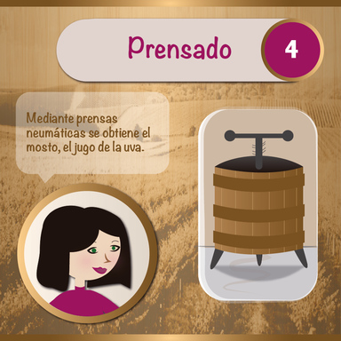

Procesos tecnológicos
Son fases sucesivas de operaciones que permiten la transformación de recursos y situaciones para lograr objetivos y desarrollar productos y servicios esperados. Contemplan decisiones con relación a propósitos, recursos y procedimientos para la obtención de un producto o servicio.
Por ejemplo:
PROCESO DE FABRICACIÓN DEL VINO
| Numero de Paso | Descripción |
|
Plantación La calidad del suelo y la elección de la uva adecuada son factores clave a la hora de obtener una uva de calidad. Para la plantación de la vid se requiere un tipo de suelo especial y unas condiciones climatológicas determinadas. Los diversos tipos de uva presentan características y propiedades diferentes y requieren tipos de suelo y climas específicos. Las vides son plantas longevas, que cultivadas con los cuidados pertinentes pueden durar muchas décadas. Mantenerlas con vida en invierno o en épocas de escasez de agua requiere gran dedicación. |
|
|
Espera Tras la plantación de nuevas vides, es preciso tener paciencia. En condiciones normales la espera hasta que se obtienen las primeras uvas es aproximadamente de 18 meses, aunque para lograr la vinificación óptima se requieren unos cuantos más. De hecho, puede tardar entre 1 y 3 años en dar uvas comestibles y fuertes. Es más, durante los primeros dos años es recomendable podar las vides a fin de evitar que produzcan frutos o limitar su aparición al máximo, ya que antes las plantas aún no habrán adquirido la fuerza para soportar su peso. |
|
|
Vendimia Antes de poder realizar la vendimia, las uvas tienen que culminar el proceso de maduración que tiene lugar entre los meses de agosto y octubre. Durante este proceso el nivel de ácidos disminuye dando paso a la producción de azúcares que se origina en las hojas mediante la fotosíntesis y que éstas traspasan a las uvas. No obstante, no son sólo las hojas las que contribuyen al endulzamiento del fruto, sino también los troncos de las vides, donde la planta acumula azúcares. Para poder proceder a la vendimia la uva debe presentar un grado determinado de madurez que dependerá del tipo de vino que se vaya a elaborar posteriormente. |
|
|  |
Prensado Tras la vendimia, se efectúa el prensado para obtener el jugo de la uva o el mosto. Es un proceso complicado y que debe realizarse con sumo cuidado, vigilando el grado de presión que se aplica a las uvas, ya que de éste depende en gran medida la calidad del futuro vino. Un prensado excesivo repercute negativamente en la calidad del vino, mientras que un prensado demasiado suave disminuye el rendimiento de la uva. Para la obtención de vinos blancos se recurre al proceso de aplastado bajo presión suave a fin de preservar las antocianinas. En cambio, para la elaboración de vinos tintos el prensado se efectúa a presiones muy superiores sobre la pasta. |
|
Fermentación La fermentación es el proceso por el cual el zumo de uva se convierte en alcohol gracias a la interactuación de la levadura con los azúcares del jugo. Este proceso se realiza en tanques de acero inoxidable. La levadura cumple la función de catalizador de la fermentación. Como resultado de esta reacción química se obtiene etanol y dióxido de carbono. La temperatura, el volumen de oxígeno presente en el mosto y la velocidad de la fermentación son factores que determinarán la calidad y las cualidades del producto final. Dependiendo del vino que se quiera obtener la fermentación se realiza también en cubas de madera abiertas, dentro de barriles de vino o en la propia botella. |
|
|
Maduración La maduración del vino tiene lugar en barricas de roble, que gracias a su porosidad permiten la entrada de oxígeno. El roble, a su vez enriquece el vino con pigmentos y sabores a madera. El tiempo es el factor que determina el sabor, la textura, los aromas y el equilibrio de sabores del vino. Un vino de crianza se conserva entre 6 meses y 1 año en una barrica de roble, mientras que un vino de reserva debe permanecer mínimo un año en barrica. No salen al mercado hasta cuatro años después de su elaboración. Los vinos gran reserva permanecen por lo menos 2 años en barrica y 3 en botella y no se ponen a la venta hasta seis años después de su producción. |
|
|
Filtrado Antes de proceder al embotellamiento del vino, se realiza un filtrado a fin de eliminar residuos originados durante la fermentación y maduración del vino. |
|
|
Embotellado Una vez filtrado el vino, se embotella en botellas de cristal que habitualmente tienen una capacidad de 750 ml. A fin de evitar que el vino continúe oxidándose, tras el embotellado se sella de inmediato la botella con un tapón de corcho u otros materiales. En la actualidad se emplean mayoritariamente tapones de corcho aglomerado que incluyen también goma además de otros polímeros, a fin de garantizar el cierre adecuado de las botellas y evitar que se estropee el vino por la acción del oxígeno. Tras el embotellado, las botellas deben permanecer algún tiempo tumbadas a temperatura estable y en un lugar oscuro. |
Fuente:
https://www.lidl.es/es/vinos-proceso-de-elaboracion/s1557